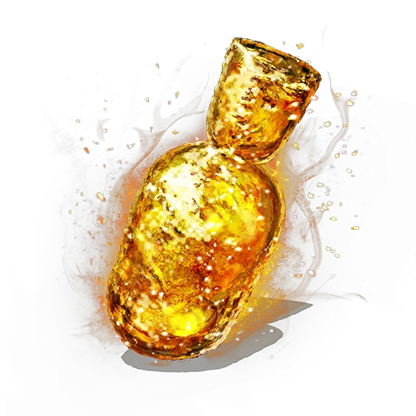

Estus Flask

The only thing that keeps a man going in the Souls Universe.
A gift from your buddy who broke you out of prison before he died. Amazing healing properties, able to keep
players in the fight against Gwyn and Manus themselves.
Note: Unable to heal falling more than 20 meters. Gravity is always a Souls players worst enemy.
Ingredients
- .25 oz. Lemon Juice
- .75 oz Tangerine Juice
- .25 oz Maraschino
- .25 oz Cinnamon Syrup
- 2 oz Pisco
- Ice
- Optional: .25 oz Lemonhart 151
Steps
- Shake the lemon juice, tangerine juice, Maraschino, Cinnamon Syrup and Pisco over ice.
- OPTIONAL AND DANGEROUS STEP: Pour the Lemonhart 151 into serving glass and set it on fire.
Pour cinnamon on it for a really cool effect.
- Extinguish the fire if you made one with your cocktail, or just drink it in a serving glass.
Now you have a delicious drink that sadly does not have insane regenerative properties in real life.
Recipe taken from How to Drink's video on YouTube: Link here.
Very cool effect showcasing the optional step at 5:02.
Return to Homepage